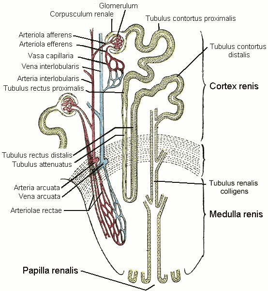
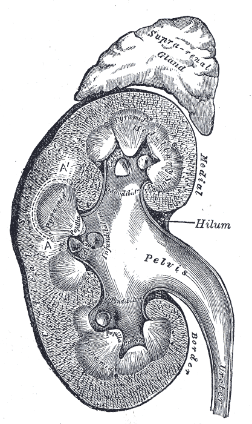
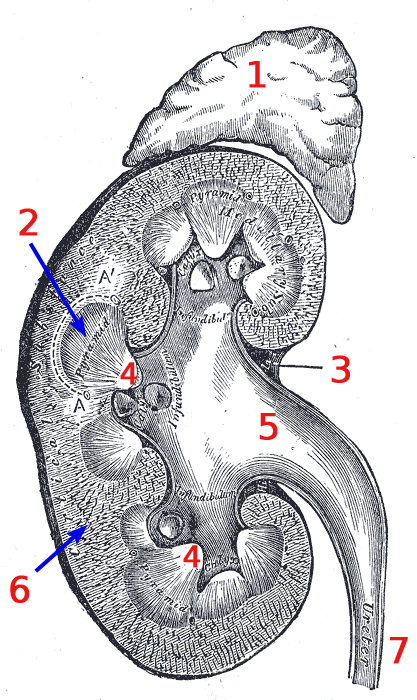

Почка: фильтрация, транспорт, концентрирование
Сводная глава. Собрана из материала нескольких руководств по нормальной физиологии и предназначена заменить их чтение по этой теме. Содержание учебное и устойчивое: морфология, механизмы транспорта и порядок процессов не меняются от пересмотра клинических рекомендаций. Числовые значения приведены как ориентировочные учебные — у разных авторов они различаются в пределах десятка процентов, и перед экзаменом их стоит сверить со своим основным учебником.
1. Зачем почке такой порядок работы
Интуиция подсказывает, что орган выделения должен работать как сито: пропускать наружу ненужное и задерживать нужное. Почка устроена ровно наоборот. Сначала она выбрасывает в просвет канальца почти всю плазму, лишённую крупных белков, — около ста восьмидесяти литров в сутки. Затем девяносто девять процентов этого объёма возвращается обратно в кровь, и наружу выходит примерно полтора литра. На первый взгляд это чудовищное расточительство: орган прогоняет через себя объём, в сто двадцать раз превышающий объём всей плазмы тела, чтобы в итоге выделить полтора литра.[1, с. ?]
Смысл такого устройства становится понятен, если задать вопрос иначе: во что обошёлся бы избирательный фильтр? Он должен был бы распознавать каждое вещество на входе — отличать глюкозу от её структурных аналогов, нужную аминокислоту от ненужной, полезный метаболит от токсичного. Для каждого вещества понадобился бы собственный распознающий механизм, и появление в организме любого нового соединения — лекарства, токсина, продукта необычного обмена — оставляло бы почку беспомощной: фильтр не знал бы, что с ним делать.
Неизбирательный фильтр плюс избирательный возврат решает эту задачу принципиально иначе. Фильтрация не различает ничего: сквозь барьер проходит всё, что меньше определённого размера и не несёт мешающего заряда. Различение переносится на этап реабсорбции, где оно устроено просто и надёжно: для нужных веществ существуют переносчики, и эти вещества возвращаются; для всего остального переносчиков нет, и оно уходит наружу. Незнакомое соединение по умолчанию выводится — а это ровно то поведение, которое требуется от системы выделения.
Плата за универсальность — энергия. Фильтрация даётся почке почти даром: её движущая сила — давление крови, которое создаёт сердце. А вот обратный транспорт требует работы, и основная доля почечного потребления кислорода приходится именно на него. Отсюда следует практически важное: при снижении кровотока страдает прежде всего реабсорбция, а не фильтрация, и клетки канальцев гибнут раньше, чем клубочки перестают фильтровать.
2. Морфология: нефрон и его отделы
Структурно-функциональная единица почки называется нефроном. В одной почке их около миллиона — по разным оценкам от одного до полутора миллионов, причём число это закладывается внутриутробно и в течение жизни только уменьшается: новые нефроны у человека не образуются. Этот факт объясняет, почему утраченная почечная ткань не восстанавливается, а компенсация идёт за счёт гипертрофии оставшихся нефронов и роста фильтрации в каждом из них.[2, с. ?]

2.1. Отделы нефрона
Нефрон начинается почечным тельцем и заканчивается впадением в собирательную трубочку. Почечное тельце состоит из клубочка — клубка капилляров — и окружающей его двустенной капсулы. Из капсулы фильтрат поступает в проксимальный каналец, затем в петлю Генле, далее в дистальный каналец и, наконец, в собирательную трубочку, общую для многих нефронов.

| Отдел | Что происходит | Особенность, которую спрашивают |
|---|---|---|
| Почечное тельце | Фильтрация плазмы, образование ультрафильтрата | Трёхслойный барьер; заряд барьера отрицательный, поэтому альбумин задерживается сильнее, чем следовало бы по размеру |
| Проксимальный каналец | Возврат около 65 % воды и натрия, вся глюкоза и аминокислоты, большая часть бикарбоната | Реабсорбция изоосмотическая: вода идёт за растворёнными веществами, осмолярность просвета не меняется |
| Петля Генле | Разделение воды и солей, создание осмотического градиента мозгового вещества | Нисходящая часть проницаема для воды и не проницаема для солей, восходящая — наоборот |
| Дистальный каналец | Тонкая подстройка натрия, секреция калия и ионов водорода | Первый отдел, где реабсорбция по-настоящему регулируется гормонами |
| Собирательная трубочка | Итоговое определение объёма и концентрации мочи | Проницаемость для воды переменная и целиком зависит от антидиуретического гормона |
2.2. Два типа нефронов
Нефроны неоднородны, и различие между ними принципиально для понимания того, как почка концентрирует мочу.
- Корковые (поверхностные) нефроны — около 85 %
- Почечное тельце лежит в наружной части коркового вещества, петля короткая и едва заходит в мозговое вещество. Они выполняют повседневную работу по выведению воды и солей, но градиента не создают.
- Юкстамедуллярные нефроны — около 15 %
- Тельце лежит на границе коркового и мозгового вещества, а петля длинная и уходит глубоко к сосочку. Именно они создают осмотический градиент мозгового вещества, без которого концентрирование мочи невозможно. Их немного, но значение их непропорционально велико: животные, живущие в пустыне, имеют относительно длинные петли, а животные пресноводные — короткие.

3. Кровоснабжение: две капиллярные сети подряд
Сосудистое устройство почки уникально: кровь последовательно проходит две капиллярные сети, соединённые артериолой, а не веной. Приносящая артериола распадается на капилляры клубочка; те собираются не в венулу, а в выносящую артериолу, которая затем вновь распадается — уже на перитубулярные капилляры, оплетающие канальцы.[3, с. ?]
Такое устройство даёт почке то, чего нет больше нигде: возможность независимо управлять давлением в клубочке и кровотоком в канальцевой сети. Сужение приносящей артериолы снижает давление в клубочке и уменьшает фильтрацию. Сужение выносящей, напротив, повышает давление в клубочке — кровь труднее уходит — и фильтрация растёт, хотя суммарный почечный кровоток при этом падает. Именно на этом различии строится понимание действия целого ряда препаратов, влияющих на тонус артериол.
Второе следствие двойной сети — особый состав крови в перитубулярных капиллярах. Из клубочка ушла пятая часть плазмы, а белки остались, поэтому онкотическое давление в выносящей артериоле заметно выше обычного. Это высокое онкотическое давление и «затягивает» реабсорбированную жидкость обратно в кровь: транспорт через клетку канальца доставляет вещества в межклеточное пространство, а дальше их забирает капилляр — за счёт разности онкотического и гидростатического давлений.
4. Клубочковая фильтрация
4.1. Барьер и что он пропускает
Фильтрационный барьер трёхслоен. Изнутри его образует эндотелий капилляра, пронизанный отверстиями — фенестрами, которые задерживают только клетки крови. Далее идёт базальная мембрана — главный ограничитель по размеру. Снаружи лежат отростки подоцитов, между которыми остаются узкие щели, перекрытые щелевой диафрагмой.[4, с. ?]
Барьер отбирает по двум признакам сразу. Первый — размер: чем крупнее молекула, тем хуже она проходит, и примерно с размера альбумина проникновение практически прекращается. Второй — заряд: барьер несёт отрицательный заряд за счёт гликопротеинов, поэтому отрицательно заряженные молекулы отталкиваются и задерживаются сильнее, чем предсказывал бы один только размер. Альбумин отрицательно заряжен, и именно сочетание размера с зарядом объясняет, почему в норме белка в моче практически нет.
Отсюда следует важный клинический вывод: протеинурия бывает разной по механизму. Утрата отрицательного заряда барьера при сохранной структуре даёт избирательную потерю альбумина; структурное повреждение мембраны пропускает белки без разбора, включая крупные.
4.2. Силы, определяющие фильтрацию
Фильтрация в клубочке идёт по тем же законам, что и в любом капилляре, и описывается балансом сил Старлинга. Фильтрацию создаёт гидростатическое давление крови в капиллярах клубочка. Ей противостоят два давления: онкотическое давление белков плазмы, удерживающее воду в сосуде, и гидростатическое давление жидкости в капсуле, мешающее новой порции туда поступать.
ЭФД = Pкап − (πпл + Pкапс)При ориентировочных значениях Pкап ≈ 45 мм рт. ст.,
πпл ≈ 25 мм рт. ст. и Pкапс ≈ 10 мм рт. ст.
эффективное фильтрационное давление составляет около 10 мм рт. ст.
Величина эта невелика, и потому фильтрация чувствительна к изменению любого из
трёх слагаемых.
Отметим неочевидное следствие, которое любят спрашивать: фильтрация прекращается не только при падении давления в капиллярах — например при кровопотере, — но и при росте давления в капсуле. Если отток мочи ниже по течению перекрыт камнем, опухолью или увеличенной простатой, давление в капсуле нарастает, эффективное давление падает до нуля, и фильтрация останавливается при совершенно сохранном кровотоке.1
Третье слагаемое, онкотическое давление, меняется по ходу капилляра. По мере фильтрации вода уходит, белки остаются, концентрация их растёт — и онкотическое давление к концу капилляра увеличивается настолько, что фильтрация может прекратиться, не дойдя до выносящей артериолы. Это состояние называют фильтрационным равновесием.
5. Регуляция скорости фильтрации
Скорость клубочковой фильтрации — объём фильтрата, образующийся за минуту во всех нефронах обеих почек. В норме она составляет примерно 90–120 мл/мин на стандартную площадь поверхности тела 1,73 м². Приведение к площади обязательно: без него крупный и мелкий человек несравнимы, и именно поэтому размерность СКФ всегда записывают полностью.[5, с. ?]
5.1. Ауторегуляция
Почка удерживает фильтрацию почти постоянной при колебаниях системного давления в широком диапазоне — ориентировочно от 80 до 180 мм рт. ст. Это свойство называют ауторегуляцией, и обеспечивают его два механизма.
Миогенный механизм — свойство самой гладкой мышцы приносящей артериолы: при растяжении повышенным давлением она сокращается. Просвет сужается, сопротивление растёт, и давление, доходящее до клубочка, остаётся прежним. Механизм быстрый и работает в пределах секунд.
Канальцево-клубочковая обратная связь устроена тоньше и опирается на особую анатомическую находку: восходящая часть петли Генле каждого нефрона возвращается и касается его же приносящей артериолы. В месте контакта лежит плотное пятно — группа специализированных клеток, воспринимающих концентрацию хлорида натрия в проходящей мимо канальцевой жидкости. Логика проста: если фильтрация выросла, жидкость идёт по канальцу быстрее, реабсорбироваться успевает меньше, и до плотного пятна доходит более солёная жидкость. Клетки пятна воспринимают это как сигнал и вызывают сужение приносящей артериолы — фильтрация снижается обратно.
Стоит задержаться на изяществе этой конструкции: нефрон измеряет результат собственной работы на выходе и по нему подстраивает свой же вход. Это замкнутый контур регулирования, реализованный анатомически.
5.2. Внешние влияния
Помимо собственной ауторегуляции на фильтрацию влияют симпатическая нервная система и гормоны. Выраженная симпатическая активация — при кровопотере, шоке, сильной боли — вызывает сужение обеих артериол, и фильтрация падает; это целесообразно, поскольку сохраняет объём циркулирующей крови. Ангиотензин II действует избирательнее: он сужает преимущественно выносящую артериолу и потому поддерживает фильтрацию даже при сниженном кровотоке. Простагландины, напротив, расширяют приносящую артериолу и защищают фильтрацию при спазме.
6. Проксимальный каналец: массовый возврат
Проксимальный каналец возвращает основной объём: около 65 % профильтровавшейся воды и натрия, практически всю глюкозу и аминокислоты, большую часть бикарбоната и фосфата. Работа этого отдела почти не регулируется — он трудится «всегда» и на полную мощность, а тонкая настройка оставлена дистальным отделам.[6, с. ?]
6.1. Как устроен транспорт
Движущая сила всей реабсорбции в этом отделе — натрий-калиевый насос, расположенный на базолатеральной мембране, то есть на стороне, обращённой к крови. Насос выкачивает натрий из клетки, создавая внутри неё низкую его концентрацию. Возникший градиент используется на противоположной, обращённой в просвет мембране: натрий устремляется в клетку, а переносчики «прицепляют» к нему другие вещества и тащат их против собственного градиента. Так внутрь попадают глюкоза, аминокислоты, фосфат.
Это ключевая идея, стоящая за многими деталями: почти весь транспорт в почке в конечном счёте питается энергией натриевого насоса. Понимание этого избавляет от заучивания десятков частных механизмов — достаточно помнить, что натрий идёт «под гору», а всё остальное едет на нём.
6.2. Порог реабсорбции и почему появляется глюкоза в моче
Число переносчиков конечно, поэтому и скорость возврата ограничена. Пока количество глюкозы, поступающей в каналец, не превышает возможностей переносчиков, она реабсорбируется полностью, и в моче её нет. Как только концентрация в плазме поднимается выше определённого уровня, переносчики насыщаются, избыток глюкозы остаётся в просвете и выводится с мочой.
Отсюда понятны две вещи. Во-первых, глюкозурия — не самостоятельная болезнь, а следствие превышения порога. Во-вторых, глюкоза в просвете удерживает воду осмотически, поэтому глюкозурия всегда сопровождается увеличением диуреза — механизм осмотического диуреза.
6.3. Изоосмотичность
Стенка проксимального канальца хорошо проницаема для воды. Как только растворённые вещества уходят из просвета, вода следует за ними осмотически, и концентрация в просвете остаётся практически равной концентрации плазмы. Объём жидкости уменьшается на две трети, но осмолярность её не меняется. Поэтому говорят, что реабсорбция в проксимальном канальце изоосмотическая — важное отличие от последующих отделов.
7. Петля Генле и противоточный механизм
Петля Генле решает задачу, которую нельзя решить в одном отделе: она разделяет воду и соли, создавая в мозговом веществе область высокой осмолярности. Устроено это на противоположных свойствах двух её частей.[1, с. ?]
7.1. Разные свойства нисходящей и восходящей частей
Нисходящая часть хорошо проницаема для воды и практически непроницаема для солей. Спускаясь в мозговое вещество, где межклеточная среда солёная, жидкость отдаёт воду наружу по осмотическому градиенту — и к вершине петли становится максимально концентрированной.
Восходящая часть ведёт себя противоположно: она непроницаема для воды, но активно выкачивает из просвета натрий и хлор. Поднимаясь, жидкость теряет соли, не имея возможности потерять воду, — и к выходу из петли становится гипотоничной, то есть более разведённой, чем плазма.
Соли, выброшенные восходящей частью, накапливаются в межклеточной среде мозгового вещества и делают её солёной — именно они и создают ту среду, которая затем отнимает воду у нисходящей части. Система сама себя поддерживает: чем активнее восходящая часть выкачивает соли, тем солонее становится окружение, тем больше воды отдаёт нисходящая часть, тем концентрированнее приходит жидкость к вершине и тем больше солей может быть выкачано. Такое устройство называют противоточно-множительным: небольшая разность концентраций, создаваемая на каждом уровне, многократно умножается вдоль длины петли.
7.2. Зачем нужен градиент
Важно понимать, что сама петля мочу не концентрирует — на выходе из неё жидкость разведена. Петля создаёт условие: солёное мозговое вещество. Использует это условие уже собирательная трубочка, которая проходит сквозь мозговое вещество по пути к сосочку. Если её стенка проницаема для воды, вода уйдёт в солёное окружение, и моча станет концентрированной; если непроницаема — разведённая жидкость выйдет наружу как есть.
Отсюда ясно, почему длина петли определяет способность концентрировать мочу и почему юкстамедуллярные нефроны с их длинными петлями так важны, несмотря на малочисленность.
8. Дистальный каналец и собирательные трубочки
В дистальных отделах возвращается сравнительно немного — порядка десяти процентов профильтрованной воды и натрия. Но именно здесь реабсорбция становится регулируемой, и именно эти проценты определяют итоговый состав мочи.[2, с. ?]
8.1. Дистальный извитой каналец
Начальная его часть, как и восходящая часть петли, непроницаема для воды и продолжает выкачивать соли, ещё сильнее разводя жидкость. Дальше в стенке появляются клетки, чувствительные к альдостерону: они усиливают реабсорбцию натрия и одновременно секрецию калия. Связь эта прямая и объясняет частое клиническое наблюдение: состояния и препараты, усиливающие задержку натрия, склонны выводить калий, и наоборот.
8.2. Собирательные трубочки и роль АДГ
Собирательная трубочка — последняя инстанция. Её проницаемость для воды не постоянна, а задаётся антидиуретическим гормоном. Под его действием в мембрану клеток встраиваются водные каналы, и вода начинает уходить в солёное мозговое вещество; в отсутствие гормона каналы убираются, стенка становится непроницаемой, и разведённая жидкость выходит наружу в виде большого объёма светлой мочи.
Диапазон регулирования огромен: осмолярность конечной мочи у человека может меняться примерно от 50 до 1200 мосм/кг, то есть более чем в двадцать раз. Это и есть главный инструмент поддержания постоянства внутренней среды при изменчивом поступлении воды.

| Отдел | Доля воды | Регулируется? |
|---|---|---|
| Проксимальный каналец | около 65 % | практически нет, работает постоянно |
| Петля Генле | около 25 % | нет; создаёт условие для регуляции ниже |
| Дистальный каналец | около 7 % | да, альдостерон |
| Собирательные трубочки | около 3 % | да, антидиуретический гормон |
Обратите внимание на кажущийся парадокс: на регулируемые отделы приходится всего около десяти процентов объёма, но именно они определяют, будет ли выделено полтора литра мочи или пятнадцать. Десять процентов от ста восьмидесяти литров — восемнадцать литров; вот запас, которым и распоряжается регуляция.
9. Гормональная регуляция
9.1. Антидиуретический гормон
Вырабатывается в гипоталамусе и выделяется задней долей гипофиза. Главный стимул к выделению — повышение осмолярности плазмы, воспринимаемое осморецепторами; дополнительный — значительное снижение объёма циркулирующей крови. Действие сводится к встраиванию водных каналов в собирательных трубочках, то есть к задержке воды без задержки солей. Итог — концентрированная моча малого объёма и снижение осмолярности плазмы.[3, с. ?]
9.2. Ренин-ангиотензин-альдостероновая система
Система запускается при снижении давления в приносящей артериоле, снижении концентрации натрия у плотного пятна или симпатической активации. Клетки юкстагломерулярного аппарата выделяют ренин, что через каскад превращений приводит к образованию ангиотензина II. Тот действует по нескольким направлениям сразу: сужает сосуды, повышая системное давление; избирательно сужает выносящую артериолу, поддерживая фильтрацию; стимулирует выделение альдостерона; усиливает жажду.
Альдостерон действует в дистальных отделах: усиливает реабсорбцию натрия и секрецию калия. Задержка натрия влечёт задержку воды, объём циркулирующей крови растёт, давление повышается — контур замыкается.
9.3. Натрийуретические пептиды
Противовес предыдущей системе. Выделяются миокардом предсердий при их растяжении, то есть при избытке объёма. Действие противоположное: усиление выведения натрия и воды, расширение приносящей артериолы и рост фильтрации, подавление выделения ренина и альдостерона.
Полезно видеть общую картину: две системы тянут в разные стороны, и нормальное состояние — не отсутствие их активности, а равновесие между ними.
10. Участие почки в кислотно-основном равновесии
Раздел этот в учебниках нередко вынесен отдельно, и напрасно: он опирается на уже разобранные механизмы транспорта и без них не понимается, а с ними — выводится почти целиком.[4, с. ?]
Организм ежедневно образует кислоты: летучую — углекислый газ, выводимый лёгкими, и нелетучие, образующиеся при обмене белков. Нелетучие кислоты может вывести только почка, и делает она это двумя способами, работающими одновременно.
10.1. Возврат бикарбоната
Прежде чем выводить кислоту, почка обязана не потерять основание. Бикарбонат свободно фильтруется, и если бы он просто уходил с мочой, организм терял бы свой главный буфер. Поэтому основная часть профильтрованного бикарбоната — ориентировочно 80–90 % — возвращается уже в проксимальном канальце.
Механизм возврата остроумен и на первый взгляд парадоксален: чтобы вернуть бикарбонат, клетка выделяет в просвет ион водорода. В просвете он соединяется с бикарбонатом, образуется угольная кислота, которая под действием карбоангидразы распадается на воду и углекислый газ. Углекислый газ свободно проходит в клетку, где та же карбоангидраза собирает его обратно в угольную кислоту, а из неё — в бикарбонат, который уходит в кровь. То есть в кровь возвращается не та молекула бикарбоната, что была отфильтрована, а восстановленная эквивалентная.
Отсюда понятно, почему угнетение карбоангидразы нарушает возврат бикарбоната и приводит к его потере с мочой, а вместе с ней — к сдвигу равновесия в кислую сторону.
10.2. Выведение кислоты: два пути
Возврат бикарбоната сам по себе кислоту не выводит — он лишь не даёт потерять основание. Собственно выведение идёт в дистальных отделах и опирается на буферы мочи, поскольку выделить сколько-нибудь заметное количество свободных ионов водорода невозможно: моча стала бы недопустимо кислой уже при ничтожных количествах.
- Титруемая кислотность
- Выделенные ионы водорода связываются с фосфатным буфером мочи. Количество ограничено количеством профильтрованного фосфата, и потому этот путь имеет жёсткий потолок.
- Выведение аммония
- Клетки проксимального канальца образуют аммиак из глутамина; тот связывает ион водорода, превращаясь в аммоний, который и выводится. Путь этот наращиваемый: при длительном закислении образование аммиака усиливается в разы, и именно он берёт на себя основную нагрузку при хроническом ацидозе.
Различие между двумя путями стоит запомнить именно как различие по запасу мощности: фосфатный буфер работает сразу, но не масштабируется, аммонийный разворачивается за сутки-двое, зато способен вырасти многократно. Отсюда и клиническое следствие: острое закисление почка компенсирует хуже, чем постепенное.
11. Обмен калия
Калий требует отдельного внимания, потому что почка обращается с ним иначе, чем с натрием, и потому что нарушения его концентрации опасны непосредственно — через влияние на возбудимые ткани.[5, с. ?]
Калий свободно фильтруется, и около 65 % его возвращается в проксимальном канальце, ещё часть — в петле. К дистальным отделам доходит немного, и здесь происходит главное: в зависимости от потребностей организма калий может как реабсорбироваться дальше, так и секретироваться в просвет. Итоговое количество калия в моче определяется преимущественно секрецией, а не тем, сколько его отфильтровалось.
Секреция усиливается при повышении концентрации калия в плазме, под действием альдостерона и при увеличении скорости тока жидкости по дистальному канальцу. Последнее объясняет практическое наблюдение: состояния и вмешательства, увеличивающие поток жидкости через дистальные отделы, склонны выводить калий.
Связь калия с натрием в дистальных отделах прямая: альдостерон одновременно усиливает возврат натрия и секрецию калия. Поэтому задержка натрия и потеря калия идут рука об руку, и разбирая любое нарушение обмена натрия, разумно сразу задаться вопросом о калии.
Существует и связь с кислотно-основным равновесием, поскольку в дистальных отделах ион водорода и ион калия отчасти конкурируют за секрецию. Сдвиг равновесия в кислую сторону располагает к задержке калия, в щелочную — к его потере. Механизм этот в учебниках изложен с разной степенью подробности, но сам факт связи следует держать в голове.
12. Клиренс и оценка функции
12.0. Почечный плазмоток и фильтрационная фракция
Прежде чем говорить о фильтрации в отдельности, полезно назвать величины кровотока. Через почки проходит около пятой части сердечного выброса — ориентировочно 1100–1200 мл крови в минуту, что при обычном гематокрите соответствует примерно 600–700 мл плазмы в минуту. Это несоразмерно много для органов, составляющих менее половины процента массы тела, и объясняется не потребностью самой ткани в кислороде, а необходимостью прогонять через фильтр большой объём.[6, с. ?]
Отношение скорости фильтрации к почечному плазмотоку называют фильтрационной фракцией. При СКФ около 120 мл/мин и плазмотоке около 600 мл/мин она составляет примерно 0,2 — то есть в клубочке отфильтровывается около пятой части проходящей плазмы, а четыре пятых уходит в выносящую артериолу.
Из этого соотношения следует уже упомянутое: белки, оставшиеся в оставшихся четырёх пятых, повышают онкотическое давление крови в выносящей артериоле, и именно оно затем обеспечивает всасывание реабсорбированной жидкости из межклеточного пространства обратно в кровь. Рост фильтрационной фракции усиливает этот эффект и косвенно усиливает реабсорбцию в проксимальном канальце — связь, которую полезно видеть, разбирая действие ангиотензина II.
12.1. Понятие клиренса
Клиренсом вещества называют объём плазмы, полностью очищаемый от него за единицу времени. Величина условная: в действительности плазма очищается частично и вся сразу, но принятое допущение делает расчёт простым.
C = (U × V) / Pгде U — концентрация вещества в моче, V — минутный
диурез, P — концентрация в плазме. Единицы концентрации в числителе
и знаменателе сокращаются, и остаётся размерность объёма в единицу времени —
миллилитры в минуту.
12.2. Почему инулин — эталон
Если вещество свободно проходит фильтр, но затем не реабсорбируется и не секретируется, всё его количество в моче попало туда исключительно путём фильтрации. Тогда клиренс такого вещества численно равен скорости клубочковой фильтрации. Этому условию точно отвечает инулин — полисахарид, который организм не узнаёт и потому не трогает.
Практическое неудобство инулина в том, что его надо вводить внутривенно и поддерживать постоянную концентрацию, поэтому в повседневной работе пользуются эндогенным креатинином. Он образуется в мышцах с относительно постоянной скоростью и фильтруется свободно, но частично секретируется в канальцах. Значит, в моче его оказывается больше, чем прошло через фильтр, и расчётная СКФ получается несколько завышенной.
12.3. Разбор расчёта
Условие. Концентрация вещества в моче 60 ммоль/л, суточный диурез 1,8 л, концентрация в плазме 0,9 ммоль/л. Найти клиренс.
- Приводим диурез к минуте:
V = 1800 мл / 1440 мин ≈ 1,25 мл/мин. Это шаг, на котором чаще всего ошибаются, оставляя литры в сутки. - Подставляем в формулу:
C = (60 × 1,25) / 0,9. - Получаем
C ≈ 83 мл/мин. - Проверяем порядок величины: результат близок к нижней границе нормы, то есть правдоподобен. Ответ в единицах или в тысячах означал бы ошибку в единицах измерения, а не находку.
12.4. Стадии по СКФ
| Стадия | СКФ, мл/мин/1,73 м² | Трактовка |
|---|---|---|
| С1 | ≥ 90 | Норма или повышение при наличии признаков повреждения |
| С2 | 60–89 | Незначительное снижение |
| С3а | 45–59 | Умеренное снижение |
| С3б | 30–44 | Существенное снижение |
| С4 | 15–29 | Резкое снижение |
| С5 | < 15 | Почечная недостаточность |
Существенная оговорка: сами по себе эти числа диагноза не ставят. Стадия по СКФ — лишь одна из осей классификации, и для заключения требуется ещё длительность состояния и наличие признаков повреждения почек.
13. Где это ломается
Понимание нормальной физиологии окупается тем, что позволяет не заучивать клинические картины, а выводить их. Рассмотрим три уровня, на которых нарушается выделение мочи, — различение это диагностически первое, что нужно установить.[1, с. ?]
13.1. До почки
Кровоток к почке снижен — при кровопотере, обезвоживании, выраженном падении сердечного выброса. Сама почечная ткань цела. Фильтрация падает потому, что падает гидростатическое давление в клубочке. Канальцы при этом работают и активно возвращают натрий и воду, поэтому мочи мало, она концентрированная, а натрия в ней немного. Состояние обратимо быстро, если восстановить кровоток.
13.2. В самой почке
Повреждена почечная ткань — токсинами, ишемией, воспалением. Канальцы перестают справляться с реабсорбцией, поэтому моча теряет способность концентрироваться, а натрия в ней оказывается много, несмотря на общий дефицит. В осадке появляются элементы, которых в норме нет. Восстановление медленное, поскольку требует регенерации эпителия.
13.3. После почки
Отток мочи перекрыт. Как разобрано в разделе о силах фильтрации, давление в капсуле растёт, эффективное фильтрационное давление падает, и фильтрация останавливается — при полностью сохранном кровотоке и целой ткани. Осадок мочи скудный. Устранение препятствия способно быстро вернуть функцию, и потому распознать этот вариант важно раньше остальных.
| Признак | До почки | В почке | После почки |
|---|---|---|---|
| Почечный кровоток | снижен | сохранён | сохранён |
| Концентрирование мочи | сохранено | нарушено | переменно |
| Натрий мочи | низкий | высокий | переменный |
| Осадок мочи | скудный | богатый | скудный |
| Скорость восстановления | быстрая | медленная | быстрая после устранения |
14. Итог главы
Почка построена на одной идее: неизбирательно отфильтровать почти всё, а затем избирательно вернуть нужное. Это дороже по энергии, но принципиально надёжнее избирательного фильтра, потому что незнакомое вещество по умолчанию выводится.[2, с. ?]
Фильтрация подчиняется балансу сил Старлинга и потому останавливается тремя разными способами: при падении давления в капиллярах, при росте давления в капсуле и при чрезмерном росте онкотического давления плазмы. Скорость фильтрации удерживается постоянной ауторегуляцией — миогенным механизмом и канальцево-клубочковой обратной связью, в которой нефрон измеряет результат собственной работы и подстраивает по нему свой вход.
Реабсорбция распределена неравномерно и по смыслу делится надвое. Проксимальный каналец и петля возвращают девяносто процентов объёма нерегулируемо; дистальные отделы возвращают оставшиеся десять, но делают это под управлением гормонов — и именно эти десять процентов определяют итог. Петля Генле при этом не концентрирует мочу, а создаёт условие для концентрирования: солёное мозговое вещество, которым пользуется собирательная трубочка.
Оценка функции строится на понятии клиренса. Клиренс равен скорости фильтрации только для вещества, которое почка после фильтрации не трогает; для креатинина это условие нарушено секрецией, и расчётная величина завышена.
Источники
- Гайтон А. К., Холл Дж. Э. Медицинская физиология. — М.: Логосфера, 2018. ↑ ↑ ↑
- Физиология человека / под ред. В. М. Покровского, Г. Ф. Коротько. — М.: Медицина, 2011. ↑ ↑ ↑
- Шмидт Р., Тевс Г. Физиология человека: в 3 т. — М.: Мир, 2005. ↑ ↑
- Barrett K. E., Barman S. M., Brooks H. L., Yuan J. X.-J. Ganong’s Review of Medical Physiology. 26th ed. — McGraw Hill, 2019. ↑ ↑
- Boron W. F., Boulpaep E. L. Medical Physiology. 3rd ed. — Elsevier, 2017. ↑ ↑
- Eaton D. C., Pooler J. P. Vander’s Renal Physiology. 9th ed. — McGraw Hill, 2018. ↑ ↑